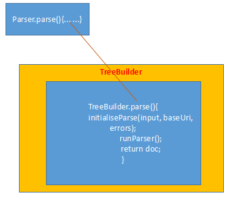

怎么将html封装成dom对象的？ 主要是由TreeBuilder中的parse方法进行转换的。  1、Jsoup类提供了一些静态方法，可以将各种输入，转换成Document对象。 1）可以传入html文本、文件、输入流，来将其解析为一个Document， 2）传入一个URL地址，Jsoup将会调用网络连接相关的api来抓取html，然后将其解析成Document 3）传入html代码片段，将其解析成Document。 public static Document parse(URL url, int timeoutMillis) public static Document parse(String html, String baseUri)// public static Document parse(String html, String baseUri, Parser parser) public static Document parse(String html) public static Document parse(File in, String charsetName, String baseUri) public static Document parse(File in, String charsetName) public static Document parse(InputStream in, String charsetName, String baseUri) public static Document parse(InputStream in, String charsetName, String baseUri, Parser parser) public static Document parseBodyFragment(String bodyHtml, String baseUri) public static Document parseBodyFragment(String bodyHtml) 2、那parse方法是怎么运行的呢？ 可以看到，是Parser的静态方法parse将html解析成了Document。 继续看，最终是TreeBuilder将html构建成了一个Document对象。 我们继续看 treeBuilder.parse方法里的内容，多次进入方法后，可以看到TreeBuilder中这样的代码 由此可以看到解析html的过程包含了2部分，一个是初始化解析环境，另一个就是运行解析的过程。 3、初始化解析环境是怎么一回事。 需要注意的CharacterReader的构造方式。传入的String被转换成了Char数组。 4、运行解析的过程*********这里是重点 而核心则是tokeniser.read这句代码，为什么呢？ 因为这句话，遍历了html内容，将对应的dom节点，封装成了token对象。而在下面的process方法中，插入了Jsoup的Document中。